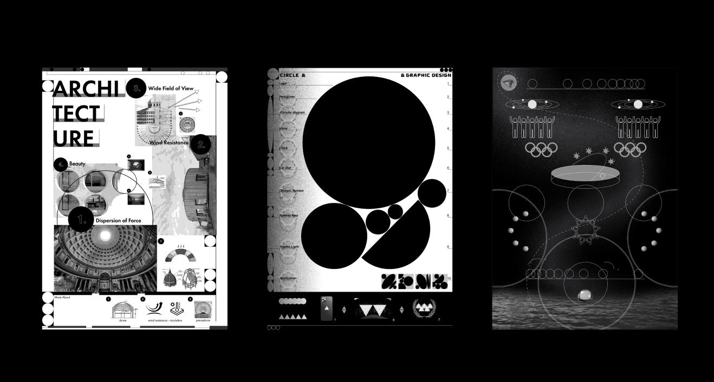
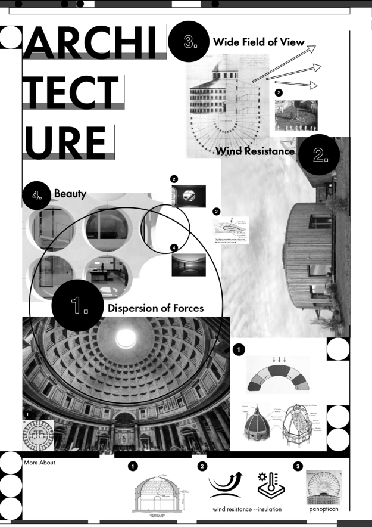
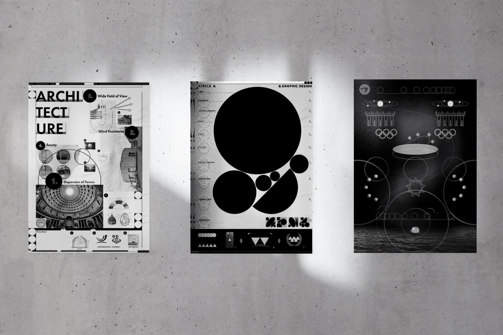

Project
Contact
@jo__an_ne__
Designer
Shape Research
김조은
ABOUT CIRCLE
Category
Shape Poster1 / Shape Poster2 / Shape Poster3
원에 대한 리서치 후에 원의 특징을 크게 3가지로 분류하여 포스터를 제작했습니다.
첫 번째는 원의 구조적 특성,
두 번쨰는 원의그래픽적 특성, 세 번째는 원으 상징적 특성을 주제로
한 포스터입니다.
각 포스터의 디테일한 설명은 아래에 있습니다.
SHAPE POSTER1
SHAPE POSTER2
SHAPE POSTER3
Poster
Poster
Poster
앞선 3가지 포스터 주제 중 하나를 정해서 이로부터 새로운 3가지 배리에이션의 포스터를 만들어 보는 작업을 했고,
이번에는 원의 상징적 의미를 주제로 아래의 3가지 포스터를 또 제작했습니다.
삼각형은 나에게 자유로운 마음을 의미한다.
내 피부는 좀 빨갛고, 또 뜨거운 채로 삼각형만 입고 공중에 떠다니고 싶은 마음을 포스터로 디자인하였다.



POSTER 1 <STRUCTURE>
1-1힘의 분산
-돔: 대표적 원형 구조
-구를 반으로 자른 둥근 형태의 지붕이나 천장.
-돔의 아치구조가 힘을 분산시키기 때문에 기둥 없이도
구조물을 튼튼하게 유지할 수 있는 굉장히 유용한 구조
1-2바람 저항
-원형구조가 공기역학적으로 바람의 저항을 덜 받아서
단열효과가 뛰어난 것을 활용한 구조물. (옆에 작은 사진은
유선형 디자인의 바람 저항)
1-3트인 시야
-원형 광장, 파놉티콘 체제 등
1-4아름다움
-마지막으로 원형 구조물에서 빼놓을 수 없는 원형의 장식적인
부분을 활용한 건축물들.
-위의 특징들을 번호를 매겨서 읽을 수 있도록 했고, 사이드에
작은 부연설명들도 같은 숫자를 붙여서 배치했습니다
POSTER 2 <SYMBOL>
그래픽디자인에서 원이 활용된 경우는 굉장히 많고,
이런 활용들을 총체적으로 보여주는 포스터를 만들었습니다.
우선 처음 포스터를 딱 봤을 때 매우 크게 배치된 원들의 고유의
형태와그 사이사이 만들어내는 여백의 형태를 보는 사람이 가장
먼저 느낄 수 있도록, 그래서 왜 그래픽디자인에서 원이 사용되는지
생각해볼 수 있게 배치했습니다.
왼쪽에는 대표적으로 원이 많이 사용된 그래픽 디자인들을
글로 나열했고 (로고, 픽토그램, 올림픽 심볼 등등) 아래에는
이 그래픽들의 원이 삼각형으로 바뀐다면 어떤 모습인지를
보여줌으로써, 원의 중요성이나 당위성을 느낄 수 있도록 했습니다.
우측의 숫자는 책 속 목차의 페이지처럼 배치해서
만약 아래에 삼각형으로 바뀐 대상이 뭔지 알고 싶으면
숫자를 찾아가서 확인할 수 있도록 배치했습니다.
POSTER 2 <SYMBOL>
3-1. 맨 위에는 “사람 눈이 본능적으로 라인을 따라가는데,
원 같은 경우는 그 라인이 끝이 없으니까, 원이 곧 움직임과
완전함을 나타낸다”는 라는 말이 있어서 이 포스터에서도 길고
느릿하게 놓여진 곡선의 라인을 따라서 포스터를 읽을 수 있게 배치
3-2 원-우주, 한 세계, 근원을 상징하기도 해서 우주를
연상하는 그래픽을 넣었습니다. 밑에 픽토그램은 화합.
공동체 의식 등을 나타냅니다.
3-3 중앙의 입체적인 부분은 시간을 의미!
해시계를 생각하고 만들었지만 순환의 의미도 될 수 있다고
생각했습니다. 밑에 여러 구도 마찬가지로 시간과
순환의 의미. 중앙의 픽토그램도 화합을 의미하는 픽토그램이지만,
원형으로 되어 있어서 순환과 영원을 떠올릴 수 있도록 배치했습니다.
마지막으로 상단과 하단에 있는 굴러가는 원은
“원은 중심에서 몇 도를 회전해도 여전히 처음 원이” 를 표현.
(영원함과 순환, 마찰없이 안정적이라는 특징과도 연결이 됩니다.)
전반적으로 신비롭고 예산 전설 같고, 깊어보이는 느낌을 주려고 했고
원의 특성에 어울리게 대칭 구도로 포스터를 제작했습니다.
POSTER 1 <우주, 탄생, 순환>
행성들이 각자의 궤도에서 순환하는 듯한 그래픽을 기본으로 사용했습니다. 가운데가 태양 자체를
의미할 수도 있지만, 동시에 좀 하얗게 날림으로써 근원이나 탄생같은 약간 신비로운 느낌도
함께 주고자 했습니다. 폰트는 너무 딱딱한 느낌보다는 살짝 옛스러운 느낌이 났으면 좋겠어서
세리프체를 사용 우주, 궤도와 같은 과학적 분위기와 어울리도록 어두운 배경에 점선과 실선을
사용 했고 포스터의 약간은 과학적인 내용과 잘 맞는 것 같아서, 전반적으로 그리드가 잘 보이는
구성을 취했습니다.
POSTER 2 <FLOW>
지난 주 3번째 포스터와 마찬가지로 원의 시선의 흐름을 활용해 중앙에 쭉 늘어진 곡선을
중심으로 포스터를 읽어나갈 수 있게 만들었고 포인트가 되는 부분은, 메인 곡선에 따라
작품 설명과 사용한 툴을 약간 의식의 흐름 기법으로 적어 놓아서 찾아 읽는 재미를
조금 느낄 수 있도록 했습니다. 전반적으로 원의 흐름을 함께 느끼면서 보는 사람들이
포스터를 재미있게 읽어나갈 수 있게 제작 원이 흘러가는 부분들은 저번에 리서치 했던 것 중에,
“원은 중심에서 몇 도를 회전해도 여전히 처음 원이다” 라는 원의 특성을 표현하고자 흐르는,
굴러가는 원을 그렸습니다. 이는 동시에 영원함과 순환과도 연결이 되는 부분이라고 할 수 있습니다.
폰트 사용은 이번에도 세리프체를 사용했지만, 첫번째의 포스터의 정직한 글자 배치와는 다르게,
시선의 흐름을 생각해서 크기 변화도 주면서 약간 재미있게 배치해 보았습니다.
POSTER 3 <통합, 공동체 의식>
서로 다른 점들이 연결되고 통합되는 모습을 연상시키는 포스터 중앙의 퍼져나가는 원들은 와이파이를
연상 (연결과 통합) 점의 요소가 잘 드러나는 폰트를 사용해서 개개인의 통합 강조
Final Poster <CIRCULATION>
(type1-밤.우주/type2- 이른아침. 새벽)
1. "사람의 시선은 본능적으로 선을 따라가고, 원에는 그 선의 끝이 없으니 곧 영원함과 움직임을 상징한다"에서 영감을 받아 제작
2. 시선의 흐름, 원의 흐름을 극대화하고자 전반적으로 원들이 계속해서 움직이는 무빙 포스터 제작(소리o)
3. 원의 흐름 뿐 아니라 원이 구조적이고 완벽한 도형이라는 특징도 함께 보여주고자 그리드를 구조적으로 활용
- 그리드 자체가 원이 흐르는 통로가 되도록 제작
그리드 자체가 원이 흐르는 통로가 되도록 제작(직선의 그리드, 곡선의 그리드)
원의 상징적 의미들을 소개하는 작은 포스터 패키지처럼 만들기 위해 추가한 시스템. 포스터를 네 구역으로
나누어 구역을 넘나들때마다 원의 색상이 바뀜 각 구역의 색상과 제목을 보고 그에 맞는 부록카드를 보면 원에 대한 작은
스토리들을 읽어볼 수 있다.